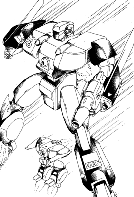

The following material is from
THE THIRD INVID
WAR, a fan supplement by
Dave Deitrich and
Chris
Meadows. Please feel free to use, copy, and distribute
it as you see fit. All we ask is that you give proper credit to us and do not
claim that it is your own work. Comments and suggestions are welcome.
THE VBF-3 BETA FIGHTER
WARNING: EXTREMELY POWERFUL! This mecha is a very powerful
Veritech fighter and should be handled with care by GMs. Liberal application
of this design may be unbalancing to game play!
BACKGROUND

The VBF-3 Close Combat Heavy Assault Beta Fighter
was an experimental mecha combat superiority fighter designed to be a
complimentary design for the VAF-9 Heavy Assault Alpha
Fighter produced during the early days of the Third Invid War.
Both mecha designs were intended to serve as the spearhead for the Prometheus
Mission liberation force being sent to Earth to liberate the world from the
Invid forces. Designed to combat new invid mecha (but built with very little
information on the capabilities of the invid mecha it was intended to face)
the VAF-9 and VBF-3 both incorporated the most advanced mecha combat systems
available to the Project Shadowchaser R&D engineers at the time.
Like its VAF-9 companion, the VBF-3 was built around the new FF-4000X
Experimental Fusion/Protoculture Variable Turbines, dual-source protoculture
engines that could supply tremendous thrust and maneuvering power both inside
and outside of an atmosphere. In addition the Beta contains two new XTR-90
rocket boosters for quickly achieving orbital velocity while attached to a
VAF-9 Alpha. The VBF-3 is significantly larger than the VBF-2 and VBF-1 Betas
due to the size requirements of the two immense engine systems. However, the
larger airframe and stronger superstructure allowed the designers to mount
heavier weapons on the new fighter as well. The missile launchers in the
shoulders were expanded to include an extra 10 missiles (60 total) in each
unit, while the medium-range missiles were moved from the overhead rack to the
legs of the mecha and expanded in capacity to a total of 20 MRMs. Like
previous Betas the VBF-3 also has two long range missiles mounted on either
side of the cockpit.
Non-missile weapon systems were augmented as well. Thanks to new revisions in
the GU-XX firing chamber design it was possible to mount a compressed version
of the popular autocannon in each arm, giving the fighter tremendous punch at
short to medium range. As backup for the GU-XXs, a modified version of the
EU-16 Energy Cannon was mounted in the chest of the mecha, immediately below
the pilot's compartment. These weapons could be fired in any mode, though in
guardian and fighter modes they were limited to front (EU-16) and rear (GU-XX)
arcs only. Eliminating the overhead MRM rack allowed designers to include a
feature that had never before been mounted on a Beta veritech; a head. In
addition to the advanced targeting sensors mounted in the head, two TWR-30
pulse lasers identical to the ones used by the VAF-9 Veritech were added for
anti-missile and anti-personnel defense. Finally, the VBF-3 was armed with a
heavy gun pod somewhat similar to those used by smaller Alpha fighters. As
the new Beta was designed to augment the VAF-9 in close-range intense combat,
designers felt that the veritech could benefit from a gun pod for
mecha-to-mecha dogfights. The gun pod chosen for the VBF-3 was the immense
EU-18, an experimental energy cannon so massive that it could not even be
carried by smaller aircraft.
The design of the VBF-3 seemed to be plagued with mishaps. The initial
prototype went out of control and crashed during its first test flight,
killing the test pilot. Review of the wreckage traced the problem to a flaw
in the flight computer's software that coordinated thrust between the two main
engines. No sooner had this problem been corrected than 4 of the 5 remaining
remaining prototypes were requisitioned by the REF for service in the Icarus
fleet. Several engineers were asked to accompany the VBF-3s and help to
service them aboard the U.S.S. Icarus. The engineers escaped in a VBF-3 to
earth when the Icarus fleet was destroyed, but were captured by frags and later rescued by freedom fighters in one of
the more dramatic human victories of the Third Invid War.
NOTE: Due to their scarcity, encountering a VBF-3 Beta on Earth during
the Third Invid War should be a VERY rare occurrance. Although all 3 VBF-3s
made it to earth from the ill-fated Icarus Recon Mission, their fate is left
up to the GM. Players should be required to go on a LONG adventure and face
MANY dangers before they can get their hands on a VBF-3.
Meanwhile, back on Tirol work continued on perfecting the design using the
last available prototype. Eventually enough VBF-3s were produced to supply
the Prometheus Assault Group with several full squadrons of VAF-9/VBF-3 Legios
fighters. These elite squadrons took point in the final battles of the Third
Invid War and became legends in the realm of Veritech combat. However, due to
the immense cost of the VBF-3 the design was never truly mass-produced.
Following the end of the war only enough were built to replace those lost and
to equip a handful of elite REF units. In 2059, Vanguard Aerospace
and Tirolian Weapons Research tried to modernize the design as a
companion to their VAF-9 Mark II Veritech, resulting in the devlopment
of the VBF-4 Beta. The VBF-4 became the standard Beta fighter of the
Robotech Guardian Forces (RGF) for a few years, but was itself
replaced during the RGF reorganization of 2065. Only two VBF-3s from the
Third Invid War are known to have survived. One is in the Robotech War
Memorial Museum in New York on Earth, while the other is on Tirol in the
Robotech Guardian Forces Museum.
Like the VBF-2, the color scheme for the VBF-3 is based on where the unit is
stationed, i.e. space Veritechs are usually painted flat black, desert
Veritechs are painted with a light tan camouflage, etc. The Veritech was only
produced in one model (the VBF-9C) and was streamlined in colors that matched
the VAF-9 Alpha it was assigned to (blue for VAF-9C's, red for VAF-9J's, and
green for VAF-9S's).
SCHEMATICS
 Click on the icon to the left to view some schematics from the REF VBF-3 Beta
Fighter development report, document REF-A1-4432-1937, TOP SECRET!
Click on the icon to the left to view some schematics from the REF VBF-3 Beta
Fighter development report, document REF-A1-4432-1937, TOP SECRET!
RPG STATS
| Vehicle Type: |
Heavy Assault Stealth Veritech Fighter |
| Models: |
VBF-3C (Standard Model)
Although initially planned, no other variants were ever produced. |
| Crew: |
Pilot, Gunner (optional), Communication/Sensory Equipment
Operator (optional). Note: the VBF-3 does NOT have a bomb bay and
therefore cannot carry extra passengers. |
M.D.C. BY LOCATION
(1) Sensor Head 75
Head Lasers (2) 30 each
Hands (2) 75 each
Shoulders/Chest Missile Bays (2) 220 each
(2) Forearm Shields/GU-XX Guns (2) 450 each
Upper Arms (2) 120 each
Upper Legs (2) 150 each
Lower Legs/Missile Bays (2) 210 each
Wings (2) 120 each
Main Thrusters (2, in Legs) 175 each
Secondary Thrusters (2, in Torso) 100 each
(3) Main Body 500
Reinforced Pilot's Compartment 220
(4) EU-16 Gun Pod (built into chest) 75
EU-18 Gun Pod 150
- Destruction of the sensor head will greatly reduce the pilot's sensory
and targeting equipment, though backup systems prevent total sensory
blindness. Long-range radar is reduced to 2 mile range. Radio and Laser
communication systems are lost, but an auxiliary system provides voice-only
radio with a 100 mile range. Head Spotlights, Thermo-Imager, Night vision
Optics, Audio Pickup, and Head Lasers are lost. Laser targeting is also
destroyed; -1 to strike.
- The forearm shields can be used to shield the main body or body parts
from damage. The character can try to block any incoming attack, even
missiles, by blocking with one or both arms (missiles require both arms).
Roll a parry, and if successful, only the arm shields take damage. NOTE:
Destroying the forearm shields will destroy the wing connection joints and
damage the wing(s), making transformation to jet or guardian modes impossible!
The forearm-mounted GU-XX gun pods are also lost.
- Depleting the M.D.C. of the main body will completely shut the mecha
down.
- The EU-16 Gun Pod is build into and protected by the main body. Because
it is such a difficult target, attackers are -4 to strike it.
NOTE: The VBF-3 Beta incorporates the Southern Cross' laser resistant
ceramic armor, so laser weapons do only HALF damage. This does NOT include
any other energy attacks such as particle beams or ion blasts, nor does it
help against explosives.
SPECIFICATIONS
| Jet Mode with Jet Thrusters: |
Up to Mach 2.0 (1340 mph/2140.8 kmph), with a ceiling of 60 miles (96
km). |
| Jet Mode with Rocket Thrusters: |
Mach 8.5 (5800 mph/9114.5 kmph), making the mecha transatmospheric (able
to blast into outer space under its own power). |
| Jet Mode Cruising Speed: |
Mach 1.0 (670 mph/1072 kmph) |
| Guardian Mode: |
Hover stationary to about Mach 1.0 (670 mph/1072 kmph), with a maximum
altitude of 30,000 ft (9150 m), or about 4 miles. |
| Battloid Mode Flying: |
Hover stationary to about 500 mph/800 kmph, with a maximum altitude of
10,000 ft (3048 m). |
| Battloid Mode Running: |
80 mph (128 kmph) |
| Battloid Mode Leaping: |
80 ft (24.4 m) up or across without using jet boosters, 300 ft (91.5 m)
with jet boosters. |
| Height: |
42 ft (12.6 m) in battloid mode
33.6 ft (10.1 m) in guardian mode
24 ft (7.2 m) in jet mode |
| Width: |
36.4 ft (10.9 m) at shoulders in battloid mode
83.2 ft (25 m) jet and guardian modes with wings fully swept |
| Length: |
28.8 ft (8.6 m) in battloid mode
38.4 ft (11.5 m) in jet and guardian modes |
| Weight: |
18.5 tons without missiles, 26.8 tons fully loaded. |
| Cargo: |
Storage space behind cockpit can hold about 300 lbs (136.2 kg) or one
additional passenger. If the Cyclone is removed from its storage
compartment, the compartment can hold an additional 500 lbs (226.8 kg). |
| Main Engine: |
Two FF-4000X fusion/protoculture turbine in the lower torso, plus two
XTR-90 rocket boosters, one in each leg. |
| Secondary Engines: |
3 FF-3800 nuclear fusion rocket engines. |
| Range: |
24 protoculture cells will give the mecha an active combat life of about
two years. The mecha can operate on half as many cells (12) for 12 months,
but maximum speed is reduced by half and the mecha is at -1 to strike. As a
last resort, the mecha can operate solely on fusion power, but maximum speed
is reduced by 75%, the head lasers cease to function, the mecha is at -2 to
strike and -2 to dodge, and the Beta loses it's transatmospheric capability
(the main thrusters can not work on fusion power alone). |
WEAPON SYSTEMS
- HEAD MOUNTED TWR-30 PULSE LASERS (2): Two Tirolian-designed
pulse lasers are mounted in the head of the Veritech. They can fire
individually or in tandem, and are aimed by moving the mecha's head.
- Primary Purpose: Anti-personnel, Anti-aircraft
- Mega-Damage: 4D6 M.D. per individual blast or 8D6 M.D. per dual
blast.
- Payload: Unlimited
- Range: 4000ft (1200m)
- MM-60S SUPER MULTI-MISSILE SYSTEM: The VBF-3 Beta has two MM-60S
systems built into each chest/shoulder area in Battloid and accessible on the
right and left of the cockpit in Jet or Guardian mode. The retractible
systems raise their missile launchers from protective storage bays to fire
volleys of short-range missiles. The two MM-60 systems can fire independently
or simultaneously. The automatic reload system enables the pilot to fire his
entire payload of 120 missiles in one melee (this is possible by firing both
MM-60 systems simultaneously, launching 20 missiles (10 each) each melee
attack up to six times. NOTE: The MM-60S can be launched in all modes.
- Primary Purpose: Assault
- Secondary Purpose: Anti-Aircraft
- Missile Type: Standard RDF/REF short-range missiles, usually high
explosive, armor piercing, or plasma. Different types are rarely mixed, so
all 40 missiles per launcher would be the same. Of course, missiles can be
mixed if desired.
- Mega-Damage: Varies with missile type.
- Rate of Fire: One at a time, or in volleys of two, four, six,
eight, or ten (or twenty, if both launchers are fired at the same time). One
volley counts as one attack. the number of attacks per melee is equal to the
pilot's combined hand to hand attacks per melee (usually 4 or 5).
- Range: Varies with missile type; 1 to 5 miles.
- Payload: 50 missiles per each launcher, for a total capacity of
100.
- NOTE: The war-torn world makes the availability of missiles an
extremely rare event. Players should be careful not to expend all their
character's missiles too soon, because it may be a long time before more are
found.
- MEDIUM-RANGE LEG MISSILES: Each lower leg has a medium-range
missile launcher built into it. These missiles can be fired in any mode
(missiles exit the bottom of the mecha in jet mode).
- Primary Purpose: Assault/Defense
- Missile Type: Standard REF medium-range missiles, usually
armor-piercing or plasma.
- Mega-Damage: Varies with missile type.
- Rate of Fire: One at a time, or in volleys of two, four, six,
eight, or ten (all).
- Range: Varies with missile type; 40 to 80 miles.
- Payload: Ten in each leg, for a total of 20.
- TWO LONG RANGE MISSILES: These can be seen in the mid-chest area of
the Beta in Battloid, or on either side of the cockpit in Jet and Guardian
modes. These can be launched only from Jet or Guardian mode.
- Primary Purpose: Heavy Assault
- Secondary Purpose: Anti-Spacecraft
- Missile Type: Standard RDF/REF long-range missiles, usually proton,
reflex heavy, and reflex multi-warhead.
- Mega-Damage: Varies with missile type.
- Rate of Fire: One at a time.
- Payload: Two
- NOTE: Surprisingly, the long-range missiles are about as rare as
the short-range missiles because there are few mecha that use them. All
reflex and proton missiles are extremely rare.
- GU-XX 35mm ARM-MOUNTED GUN PODS: Each arm shield has an auto-feed
GU-XX built into it. This weapon is exactly like the GU-XX handgun used by
the old VAF-6 Alpha Fighters, but has a greater ammunition payload. Reloading
the Beta's GU-XXs requires tools, a mechanic, and 3D4x2 minutes.
- Primary Purpose: Assault/Defense
- Mega-Damage: 4D6 M.D. per short burst, 1D4x10 M.D. per medium burst
and 2D4x10 M.D. for a full melee burst.
- Rate of Fire: Short and medium bursts count as one attack, with the
number of attacks equal to the pilot's combined hand to hand melee attacks
(usually 4 or 5). Both guns can be fired simultaneously at the same target,
in which case both bursts count as one attack. A full melee attack takes the
place of all other attacks (both guns can still be concentrated on one
target).
- Payload: 80 short bursts, or 40 medium bursts (equal to 2 short
bursts), or 20 full melee bursts (equal to 4 short bursts) PER ARM. Total of
160 short bursts, or 80 medium bursts, or 40 full melee bursts.
- Range: 4000 ft (1200 m)
- Note: Can be fired in any mode, but in Guardian and Jet modes
firing arcs are limited to the rear of the mecha.
- EU-16 ENERGY GUN POD: A rapid-fire energy rifle similar to the old
EU-11 gun pod is built into the body of the Beta. Firing arc is limited to
the front of the mecha.
- Primary Purpose: Assault/Defense
- Mega-Damage: 1D6x10 M.D. per blast (bursts are NOT possible).
- Rate of Fire: Equal to the pilot's combined number of hand-to-hand
attacks per melee.
- Payload: Unlimited.
- Range: 6000 ft (1800 m)
- EU-18 ENERGY GUN POD: This enormous and very powerful energy weapon
is standard issue for VBF-3C Beta fighters. Designed for extra-heavy combat,
this gun pod is so big that only the VBF-3s can effectively hold and use it
(no other mecha can use it). Two EU-18 gun pods can be carried and used by
the Beta, but in almost all cases only one is issued per fighter. The EU-18
is mounted on the undercarriage of the Beta in Jet and Guardian modes. It can
be fired in any mode, either from it's mounted position or hand-held by the
mecha.
- Primary Purpose: Assault
- Mega-Damage: 1D6x10+40 M.D. per blast (bursts are NOT possible).
- Rate of Fire: Equal to the pilot's combined number of hand-to-hand
attacks per melee.
- Payload: 6 per energy clip.
- Range: 3000 ft (900 m)
- Note: Two EU-18 energy clips can be stored in the legs (one in each
leg). It requires one full melee (15 seconds) to reload a clip. Only the
biggest REF ships and bases can recharge an EU-18 energy clip.
- HAND TO HAND COMBAT: The VBF-3 Beta can engage in hand-to-hand
combat if necessary (in fact, it is designed for it). The Beta's powerful
hands and oversized servos can do fearsome damage if it gets hold of enemy
mecha.
- Punch does 3D6 M.D. in Battloid
- Kick does 3D6 M.D. in Guardian/Battloid
- Body Flip/Throw does 2D6 M.D.
- Body Block/Tackle does 2D6 M.D.
- Stomp does 2D4 M.D.
STANDARD EQUIPMENT
- SF-10 SHADOW CLOAKING DEVICE: All VBF-3 Beta Fighters are
equipped with the SF-10 Shadow Cloaking Device. The stats for this device
are the same as those for the VAF-9 Alpha
Fighter.
- LASER-RESISTANT CERAMIC COATING: Invented during the construction
of Southern Cross mecha, this coating scrambles laser tracking and reduces
laser damage by half (lasers ONLY).
- RADAR: 40 mile range. Can identify and track up to 60 targets
simultaneously.
- BACKUP RADAR: 10 mile (16 km) range. Can identify and track up to
20 targets simultaneously.
- RADIO COMMUNICATIONS: Wide band and directional radio and video
telecast capabilities. Range is 600 miles (945 km) or can be boosted
indefinitely via satellite relay.
- LASER COMMUNICATIONS: Long-range, directional communication
system. Effective range: 100,000 miles (157,500 km).
- COMBAT COMPUTER: Calculates, stores, and transmits data onto the
cockpit computer screen, heads-up display (H.U.D.), or the pilot's helmet
display. Patches in with the VAF-9's targeting computer when the two are
docked.
- TARGETING COMPUTER: Assists in the tracking of enemy targets and
is partly responsible for the VBF-3's high strike bonus.
- LASER TARGETING SYSTEM: 100 mile (160 km) range. Assists in the
striking of enemy targets and is partly responsible for the VBF-3's high
strike bonus.
- MOTION DETECTOR AND COLLISION WARNING SYSTEM: 500 ft (152.5 m)
range. Sounds an alarm and red light warns pilot of impending collision
and/or immediate target.
- TELESCOPIC OPTICAL ENHANCEMENT: 4000 ft (1218 m) range, up to 64x
magnification. 20 ft (6.1 m) field of vision.
- THERMO-IMAGER: 4000 ft (1218 m) range. A special optical heat
sensory unit that allows the infrared radiation of warm objects to be
converted into a visible image. It also enables the pilot to see in
darkness, shadows and through smoke.
- NIGHTVISION OPTICS: 4000 ft (1812 m) range. An image intensifier
that is passive, meaning it emits no light of its own, but relies on
ambient light which is electronically amplified to give a visible picture.
Nightvision can not work in absolute darkness (but infrared and
thermo-imagers can).
- EXTERNAL AUDIO PICKUP: 300 ft (91.5 m) range. A sound
amplification listening system that can pick up a whisper 300 ft away.
- HEAD SPOTLIGHTS: 600 ft. (182 m) range.
- EJECTOR SEAT: In case of an emergency, all three crewmembers can
be instantly ejected.
- CE-1 CYCLONE EJECTOR SYSTEM: Also in case of an emergency, all
three VR-135 Forager Cyclones will also be ejected from the doomed mecha.
This system is activated automatically when the pilot pulls the activation
lever for his ejection seat. The cyclones will deploy parachutes once
outside of the mecha and then land within 1D6x1000 feet of the pilot and
crew. This system was installed to allow pilots to retrieve their
cyclones even after their veritechs had been destroyed.
- SELF-DESTRUCT: A last ditch effort to prevent the capture of a
Veritech unit (usually preceded by the pilot's ejection from the Veritech)
is self-destruction. Explosive damage is fairly contained. A VBF-3 Beta
without missiles (or few) does 4D6 x 10 M.D., but a Veritech with all or
most of its missiles (35 or more) will do 3D6 x 100 M.D. to a 50 ft (15.2
m) radius.
- SMOKE SCREEN SYSTEM: The VBF-3 Beta can emit a thick cloud of
smoke from its rear to create immediate cover. The smoke screen system
can discharge a maximum of 4 bursts before needing replacement (smoke
missiles can be converted to function in the system). Each burst will
cover a 60 ft area (19.8 m).
- HEAT AND RADIATION SHIELDS: Special shielding prevents the
penetration of life-threatening heat and radiation.
- INDEPENDANT OXYGEN AND CIRCULATORY SYSTEM: Built-in tanks provide
one (1) week of continuous oxygen. With the special recycling systems,
this may be extended to four (4) weeks.
- SURVIVAL GEAR: The VBF-3 includes three VR-135 Forager Cyclones,
six weeks' compact emergency rations, an emergency signal beacon, three
first-aid kits, and a life raft. There is space for an energy rifle to be
attached to each ejector seat, and the crew of course carry side-arms.
SPECIAL RULES FOR GUNNERS
NOTE: For the purposes of this section, the "gunner" is anybody who has
weapon systems skill and is in the gunner's station of the Beta, whether he is
the Beta Gunner, Comm Officer, or just somebody along for the ride.
The gunner receives as many attacks per melee as if he had equivalent-level
Beta Basic Combat (or Expert Combat, if he has Expert Combat). He can control
all the weapons in the Alpha (if the Beta is connected and the Alpha pilot
allows) and Beta, or just choose certain weapons (as many as he thinks he can
handle) before combat begins. When the gunner is controlling a weapon, nobody
else can use it until he releases control, even if the gunner never fires it!
Weapons to be controlled by the gunner must be declared before combat begins.
It takes one full melee for the gunner to change to different weapons, and
during that time he can fire no weapons, and none of the weapons he has been
firing, or is about to assume control of, may be fired by anybody else until
they're completely programmed in.
The gunner can control only weapons fire, not hand-to-hand combat. The gunner
may control the gun pod of the Alpha when it is mounted on the plane. When
the Alpha is holding it in its hand, however, he may NOT control it.
When the gunner is firing a weapon, he receives an additional +1 to hit.
These bonuses do NOT apply to missiles (so missiles will probably not be among
the weapons the gunner chooses to operate) but DO apply to mini-missiles.